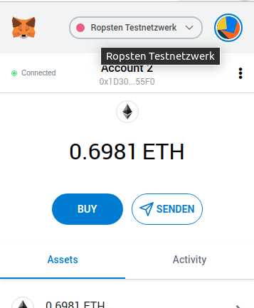
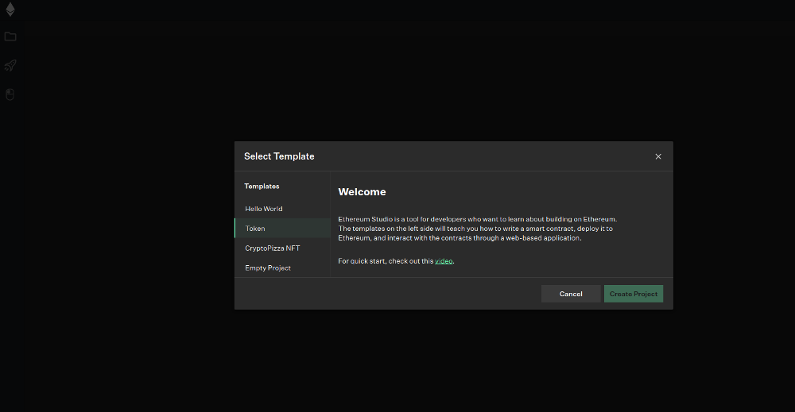
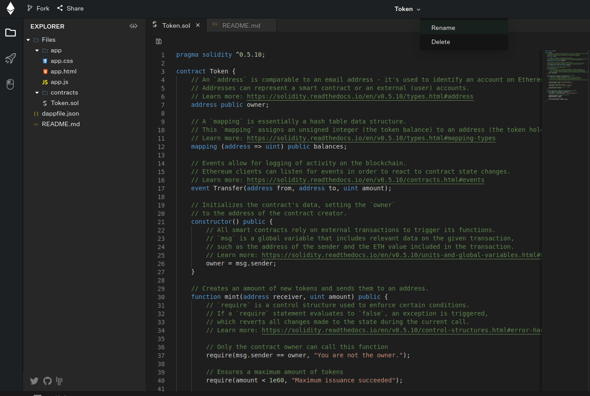
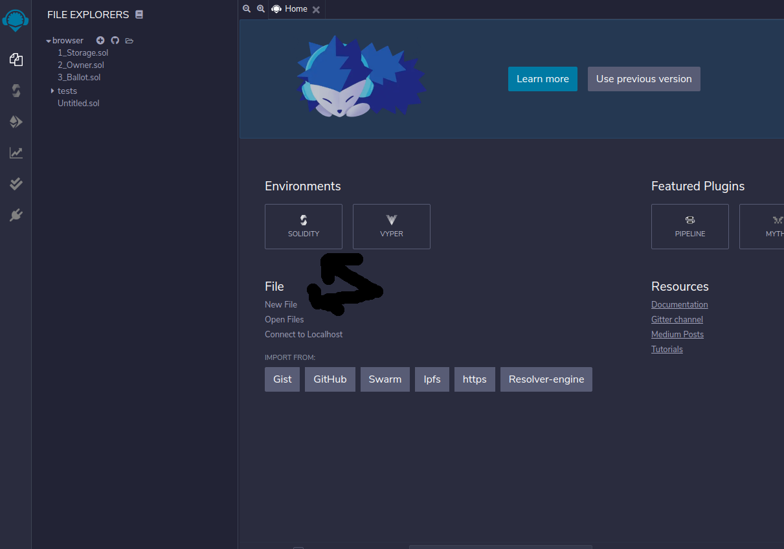
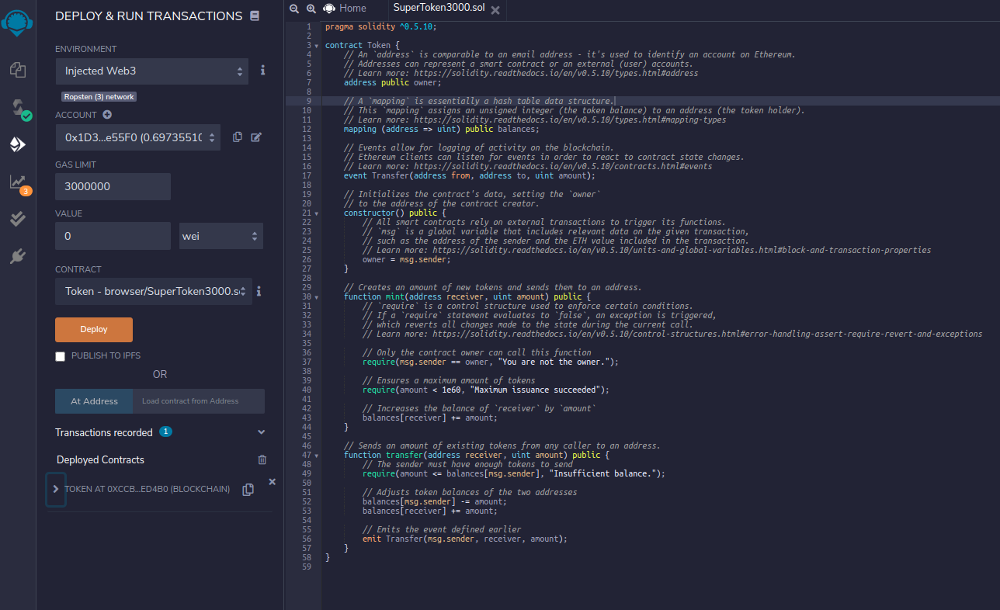

Miniguide: Deploy a token on Ropsten testnet
This miniguide explains how to deploy your custom token on Ropsten testnet using Ethereum Studio and Remix.
Building on Ethereum can be infrightening. But there are great tools available which make it really easy and secure.
Use a Browser-Wallet and get some Ropsten coins
To deploy a token on Ropsten testnet you need a browser wallet like MetaMask. In MetaMask you can switch to Ropsten testnet.

To get a Ropsten Ether, you should visit the Ropsten faucet.
Create token file with Ethereum Studio
To start creating your own Ropsten testnet token, browse to Ethereum Studio. On the front page, select the Token template and create project.

Studio automatically creates a set of files which represent your token. The standard name for it is "token". You can rename it if you want.

But don't forget to also rename the token.sol file to [newname].sol. This file is the smart contract. Select all in it and copy it.
Deploy token on Ropsten with Remix
Browser to Remix. Select Solidity as environment and create new file.

The name of the file must be [your-token-name].sol. Then paste what you copied from Ethereum Studio in this file and press the "Compile" button on the left.
Now you have to select the diamond like system in the menue bar on the left. In the drop down menue "Environment" change "JavaScript VM" into "Injected Web3". This means that your MetaMask wallet will execute the transaction, using the testnet Ether in it for gas. Be sure that a line below under "account" you have selected your account in MetaMask.

Now you can push the orange button "Deploy". Remix will give the transaction to MetaMask, which will ask you to confirm it. After you did so, the contract is created.
Mint Coins and transfer to Alphawallet
To mint coins of the token, you need to click on "token at …" on the right side in Remix.
Here you will find a menue to manage the token contract.
Minting coins is easy: Select the form beside the orange field "mint", paste in your account address and add the number of tokens after a comma. The number of tokens is in UINT256, which is a bit messy. Then press "mint" and sign with MetaMask.
You can mint the coins directly to your AlphaWallet address, or you can mint it to your MetaMask address and then transfer it to AlphaWallet with the button on Remix. Or you simply import your MetaMask wallet to AlphaWallet with the seed.